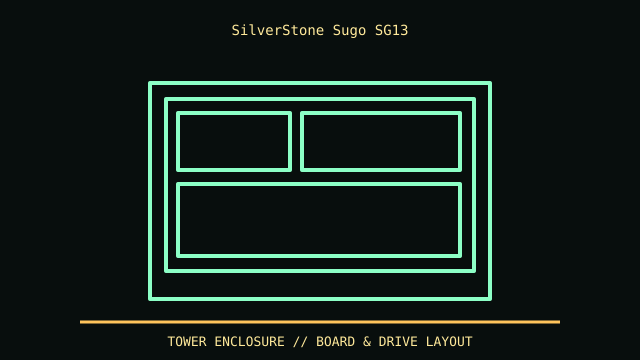

[ MODEL IDENTIFICATION // SUGO SG13 COMPACT CHASSIS ]
SilverStone Sugo SG13
222 × 181 × 285 mm (W × H × D), up to 270 mm graphics card; CPU cooler limit is PSU-dependent (about 61 mm with ATX PSU).

REVISION CAVEAT: SG13B/SG13B-Q panels and bundles differ; do not apply SG14 or Sugo family specs to this model.
Specifications & fit
| Catalog subcategory | Small-form-factor cases |
|---|---|
| Model / generation | Sugo SG13 compact chassis |
| Dimensions / form factor / clearance | 222 × 181 × 285 mm (W × H × D), up to 270 mm graphics card; CPU cooler limit is PSU-dependent (about 61 mm with ATX PSU). |
| Drive bays | One 3.5/2.5-inch combo position and up to two 2.5-inch mounts, configuration dependent. |
| Compatibility | Mini-ITX/Mini-DTX, two slots, ATX or SFX PSU. GPU, front radiator and PSU cables compete for the same small space. |
| Revision identification | SG13B/SG13B-Q panels and bundles differ; do not apply SG14 or Sugo family specs to this model. |
Compatibility & preservation notes
Mini-ITX/Mini-DTX, two slots, ATX or SFX PSU. GPU, front radiator and PSU cables compete for the same small space.
Clean intake filter; protect mesh and small panel clips. Measure GPU shroud, connector and radiator before assembly.
- Record the complete model/SKU, serial/date label, board and bay/backplane identifiers, accessories and manual revision before disassembly.
- Verify the exact fan, radiator, PSU, riser, cable and drive configuration against manufacturer dimensions; a published maximum does not ensure every combination fits simultaneously.
- Keep original brackets, fasteners, trays, feet and front-panel parts labeled with the chassis. Do not force components into modified or incomplete specimens.
Manufacturer, archive & standards sources
- SilverStone — SG13 product specificationsPrimary manufacturer or technical-reference source for this named model; use the exact SKU/document revision.
- Intel — Desktop board form factorsAdditional manufacturer, archival, or dimensional reference. Options and specimen condition can change fit.
Approximate or convention-dependent dimensions are marked as such. Measure the individual unit for restoration, shipping and installation.